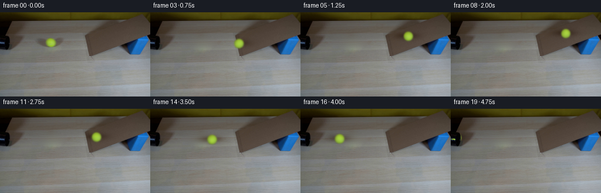
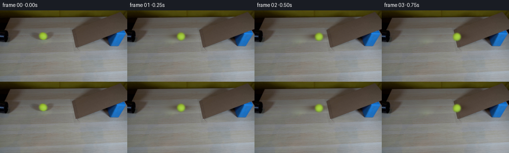

CODING AGENTS AS PIXEL WORLD MODELS
traex/GPT-6.1-Sol · 0020
点击播放 · 原生 RGB 像素
逐轮保存的候选
回放视频、检查图与代码变化。
每份候选均可单独播放。实际图片检查记录在下方工具轨迹中。
候选 01播放与检查图
点击播放 · 原生 RGB 像素


展开代码变化
--- 上一保存版本
+++ 本次保存版本
@@ -0,0 +1,183 @@
+from pathlib import Path
+import numpy as np
+from PIL import Image
+from scipy.ndimage import gaussian_filter, map_coordinates
+from scipy.optimize import least_squares
+import artifact_io
+
+ROOT=Path(__file__).resolve().parent
+
+def fit_setup(image):
+ """Estimate the little ball's appearance from the supplied photograph."""
+ yy,xx=np.mgrid[:144,:256]
+ x=(xx-86)/30.; y=(yy-51)/15.
+ A=np.stack([np.ones_like(x),x,y,x*y,y*y,y**3,x*x],-1)
+ region=(xx>=54)&(xx<=120)&(yy>=37)&(yy<=67)
+ hole=((xx-85.5)/27.5)**2+((yy-51)/11.)**2<1
+ coeff=np.linalg.lstsq(A[region&~hole],image[region&~hole],rcond=None)[0]
+ background=A@coeff
+ for row in range(35,70):
+ cols=np.r_[np.arange(48,60),np.arange(115,140)]
+ D=np.stack([np.ones_like(cols),(cols-86)/30.],-1)
+ c=np.linalg.lstsq(D,image[row,cols],rcond=None)[0]
+ background[row]=np.stack([np.ones(256),(np.arange(256)-86)/30.],-1)@c
+ x0,x1,y0,y1=59,113,38,66
+ S=3
+ X,Y=np.meshgrid(x0-.5+(np.arange((x1-x0)*S)+.5)/S,
+ y0-.5+(np.arange((y1-y0)*S)+.5)/S)
+ bg=background[y0:y1,x0:x1]
+ orig=image[y0:y1,x0:x1]
+ def down(a):
+ if a.ndim==3:
+ return a.reshape(y1-y0,S,x1-x0,S,3).mean((1,3))
+ return a.reshape(y1-y0,S,x1-x0,S).mean((1,3))
+ def render(p,all_components=False):
+ cx,cy,r,blur=p[:4];c=p[4:16].reshape(4,3)
+ sh=np.exp(-.5*(((X-p[16])/p[18])**2+((Y-p[17])/p[19])**2))
+ sh=down(sh)
+ nx=(X-cx)/r; ny=(Y-cy)/r
+ nz=np.sqrt(np.maximum(0,1-nx*nx-ny*ny))
+ alpha=(nx*nx+ny*ny<=1).astype(float)
+ col=c[0]+nz[...,None]*c[1]+nx[...,None]*c[2]+ny[...,None]*c[3]
+ prem=down(gaussian_filter(col*alpha[...,None],(blur*S,blur*S,0)))
+ alpha=down(gaussian_filter(alpha,blur*S))
+ ground=bg*(1-sh[...,None]*p[20:23])
+ out=ground*(1-alpha[...,None])+prem
+ if all_components:return out,alpha,ground
+ return out
+ p0=[86.5,51.6,8.15,.7,80,110,30,90,100,25,10,20,10,5,10,4,84,51,15,4.4,.25,.3,.35]
+ lo=[84.5,49.5,7.3,.3,0,0,0,0,0,0,-60,-60,-60,-60,-60,-60,75,46,10,2,.05,.05,.05]
+ hi=[88,53.5,9.4,1.1,170,170,90,180,180,100,60,60,60,60,60,60,92,55,24,9,.6,.6,.6]
+ fit=least_squares(lambda p:(render(p)-orig).ravel(),p0,bounds=(lo,hi),
+ max_nfev=90,diff_step=.001)
+ p=fit.x
+ fitted,alpha,ground=render(p,True)
+ residual=(orig-fitted)/np.maximum(alpha[...,None],.5)
+ my,mx=np.mgrid[y0:y1,x0:x1]
+ rr=((mx-p[0])/p[2])**2+((my-p[1])/p[2])**2
+ residual*=np.clip((.95-rr)/.27,0,1)[...,None]
+ residual=np.clip(residual,-19,19)
+ texture=np.zeros((144,256,3))
+ texture[y0:y1,x0:x1]=gaussian_filter(residual,(.3,.3,0))
+ return p,background,texture
+
+
+def clean_table(im,background):
+ # Reconstruct only the ball and its diffuse shadow; everything else remains fixed.
+ Y,X=np.mgrid[:144,:256]
+ inside=((X-84.5)/31.)**2+((Y-51)/13.)**2<1
+ error=im-background
+ error[inside]=0
+ for _ in range(700):
+ avg=(np.roll(error,1,0)+np.roll(error,-1,0)+
+ np.roll(error,1,1)+np.roll(error,-1,1))*.25
+ error[inside]=avg[inside]
+ table=im.copy()
+ grain=im[75:103,45:115]-gaussian_filter(im[75:103,45:115],(1.2,1.2,0))
+ texture=np.zeros_like(im)
+ texture[38:66,49:119]=grain*.55
+ table[inside]=(background+error+texture)[inside]
+ return table
+
+
+def position(t,p):
+ # A rolling solid sphere loses kinetic energy while ascending the ramp,
+ # reverses without a pause, and rolls back down the same straight track.
+ startx,starty,r=p[:3]
+ foot=149.2
+ speed=86.0
+ entry=(foot-startx)/speed
+ ramp_accel=78.0
+ # Contact height of the ball on the wood, then the inclined cardboard.
+ def table_y(x):return starty+.032*(x-startx)
+ if t<=entry:
+ x=startx+speed*t
+ return x,table_y(x),r,(x-startx)/r,False
+ u=t-entry
+ duration=2*speed/ramp_accel
+ if u<=duration:
+ d=speed*u-.5*ramp_accel*u*u
+ x=foot+d
+ rad=r*(1-.0008*d)
+ cy=table_y(foot)-.388*d+(r-rad)*.8
+ phase=((foot-startx)+d*np.sqrt(1+.388**2))/r
+ return x,cy,rad,phase,True
+ # Small rolling resistance dissipates energy on the table.
+ v=79.5
+ u-=duration
+ d=v*u-1.25*u*u
+ x=foot-d
+ return x,table_y(x),r,((foot-startx)-d)/r,False
+
+
+def draw_ball(base,p,texture,t):
+ cx,cy,r,phase,on_ramp=position(t,p)
+ out=base.copy()
+ if cx+r+5<0:return out
+ Y,X=np.mgrid[:144,:256]
+ # A soft area-light shadow follows the sphere; narrow dark contact anchors it.
+ sx=cx+(p[16]-p[0]);sy=cy+(p[17]-p[1])
+ ds=np.exp(-.5*(((X-sx)/(p[18]*r/p[2]))**2+((Y-sy)/(p[19]*r/p[2]))**2))
+ opacity=p[20:23]
+ if on_ramp:
+ # Do not paint a ramp shadow onto the wood beside its leading edge.
+ is_ramp=(X>=145+.20*np.maximum(Y-39,0))&(Y>=-0.385*(X-240)+3)&(Y<=75-.39*(X-153))
+ ds*=is_ramp
+ out*=1-ds[...,None]*opacity
+ contact=np.exp(-.5*(((X-(cx-.5))/(r*.53))**2+((Y-(cy+r*.90))/.75)**2))
+ out*=1-.12*contact[...,None]
+ S=4
+ xmin=max(0,int(np.floor(cx-r-5)));xmax=min(256,int(np.ceil(cx+r+5)))
+ ymin=max(0,int(np.floor(cy-r-5)));ymax=min(144,int(np.ceil(cy+r+5)))
+ if xmax<=xmin or ymax<=ymin:return out
+ w=xmax-xmin;h=ymax-ymin
+ XX,YY=np.meshgrid(xmin-.5+(np.arange(w*S)+.5)/S,
+ ymin-.5+(np.arange(h*S)+.5)/S)
+ nx=(XX-cx)/r;ny=(YY-cy)/r
+ rr=nx*nx+ny*ny
+ nz=np.sqrt(np.maximum(0,1-rr))
+ alpha=(rr<=1).astype(float)
+ c=p[4:16].reshape(4,3)
+ col=c[0]+nz[...,None]*c[1]+nx[...,None]*c[2]+ny[...,None]*c[3]
+ # Roll the original felt/seam texture over an analytic spherical surface.
+ theta=-phase
+ qx=np.cos(theta)*nx+np.sin(theta)*nz
+ qz=-np.sin(theta)*nx+np.cos(theta)*nz
+ qx=np.where(qz>=0,qx,-qx)
+ tx=p[0]+p[2]*qx;ty=p[1]+p[2]*ny
+ for ch in range(3):
+ col[...,ch]+=map_coordinates(texture[...,ch],[ty,tx],order=1,mode='nearest')
+ # Microscopic felt variation attached to the rotating sphere, not the camera.
+ felt=(np.sin(47*qx+23*ny+13*qz)*np.sin(39*ny-17*qz))*1.2
+ col+=felt[...,None]*np.array([1.,1.,.65])
+ blur=p[3]*S*(r/p[2])
+ prem=gaussian_filter(col*alpha[...,None],(blur,blur,0))
+ a=gaussian_filter(alpha,blur)
+ prem=prem.reshape(h,S,w,S,3).mean((1,3))
+ a=a.reshape(h,S,w,S).mean((1,3))
+ out[ymin:ymax,xmin:xmax]=out[ymin:ymax,xmin:xmax]*(1-a[...,None])+prem
+ # The left-hand pipe remains foreground if the ball returns behind it.
+ pipe=(X<19)&(Y<62)&(base.mean(-1)<50)
+ out[pipe]=base[pipe]
+ return out
+
+
+def main():
+ first=np.asarray(Image.open(ROOT/'first_frame.png').convert('RGB'))
+ im=first.astype(float)
+ p,bg,texture=fit_setup(im)
+ clean=clean_table(im,bg)
+ frames=[first.copy()]
+ # Short exposure, with four evenly spaced samples, avoids artificial trails.
+ for i in range(1,20):
+ t=i/4
+ samples=[draw_ball(clean,p,texture,t+dt) for dt in [-.0075,-.0025,.0025,.0075]]
+ frames.append(np.clip(np.mean(samples,0)+.5,0,255).astype(np.uint8))
+ frames=np.stack(frames)
+ np.save(ROOT/'.tmp'/'generated_rgb.npy',frames)
+ Image.fromarray(np.clip(clean,0,255).astype(np.uint8)).save(ROOT/'.tmp'/'clean_plate.png')
+ artifact_io.save(frames,ROOT)
+ print('Saved',frames.shape,frames.dtype)
+ print('Centers:',[(i,tuple(round(v,2) for v in position(i/4,p)[:3])) for i in range(20)])
+
+if __name__=='__main__':main()
可观测工具轨迹
实际执行的命令与返回图片。
命令 1exit 0
/bin/bash -lc 'ls -la && cat prompt.txt && cat GENERATION_RULES.md'
命令 2exit 0
/bin/bash -lc "cat artifact_io.py && python - <<'PY'
from PIL import Image
import numpy as np
im=np.asarray(Image.open('first_frame.png'));print(im.shape)
# averaged cells in hue letters and brightness
for y in range(0,144,4):
s=''
for x in range(0,256,4):
r,g,b=im[y:y+4,x:x+4,:3].mean((0,1))
if max(r,g,b)<45:c='K'
elif b>r*1.16 and b>g*1.03:c='B'
elif g>r*1.12 and g>b*1.1:c='G'
elif r>100 and g>100 and b<.62*min(r,g):c='Y'
elif max(r,g,b)-min(r,g,b)<17:c='.' if r>190 else ':' if r>110 else 'k'
elif r>g*1.2 and r>b*1.25:c='R'
else:c='o' if r>150 else 's'
s+=c
print(f'{y:3d} '+s)
PY"命令 3exit 0
/bin/bash -lc "python - <<'PY'
from PIL import Image
import numpy as np
from scipy.cluster.vq import kmeans2
im=np.array(Image.open('first_frame.png')).astype(float)
c,l=kmeans2(im.reshape(-1,3),18,minit='++',seed=1)
for i in range(18):
ys,xs=np.where(l.reshape(144,256)==i)
print(chr(65+i),np.round(c[i]),len(xs),'bounds', (xs.min(),ys.min(),xs.max(),ys.max()), 'center', np.round([xs.mean(),ys.mean()],1))
small=np.array(Image.open('first_frame.png').resize((128,72))).astype(float)
ids=((small[:,:,None,:]-c)**2).sum(3).argmin(2)
for y,row in enumerate(ids):print('%3d '%(y*2)+''.join(chr(65+x) for x in row))
PY"命令 4exit 0
/bin/bash -lc "python - <<'PY'
from PIL import Image
import numpy as np
im=np.array(Image.open('first_frame.png'))
for y in [0,5,10,12,14,20,30,40,45,50,55,60,65,70,75]:
print('Y',y)
for x in range(0,256,8):print(f'{x}:{tuple(im[y,x])}',end=' ')
print()
print('\\nBall patch:')
for y in range(39,64):
s=''
for x in range(72,104):
r,g,b=map(float,im[y,x]);
if g>r*1.09 and g>b*1.5:c='Y'
elif r<78:c='k'
elif r<97:c='s'
elif r<112:c=':'
elif r<130:c='.'
else:c=' '
s+=c
print(y,s)
PY"命令 5exit 0
/bin/bash -lc "python - <<'PY'
import numpy as np
from PIL import Image
im=np.array(Image.open('first_frame.png'))
print('Patch luminance x54..120 step2, rows38..66 step1:')
for y in range(38,67):
print(f'{y:2}', ' '.join(f'{int(im[y,x,:].mean()):3}' for x in range(54,121,2)))
print('Ball colors')
for y in range(44,60,2): print(y,' '.join(f'{x}:'+','.join(map(str,im[y,x])) for x in range(78,96,2)))
PY"命令 6exit 0
/bin/bash -lc "python - <<'PY'
import numpy as np
from PIL import Image
im=np.array(Image.open('first_frame.png')).astype(float)
# slopes: brown table at rows, print contiguous runs of brown for ramp
for y in range(0,78,2):
m=(im[y,:,0]-im[y,:,1]>8)&(im[y,:,1]-im[y,:,2]>5)&(im[y,:,2]>25)
idx=np.where(m&(np.arange(256)>130))[0]
a=np.split(idx,np.where(np.diff(idx)>1)[0]+1)
print(y,[(p[0],p[-1]) for p in a if len(p)>3])
PY"命令 7exit 0
/bin/bash -lc "python - <<'PY'
import cv2, scipy
print('cv',cv2.__version__)
PY"命令 8exit 0
/bin/bash -lc "cat > .tmp/fit_ball.py <<'PY'
import numpy as np
from PIL import Image
from scipy.ndimage import gaussian_filter
from scipy.optimize import least_squares
I=np.array(Image.open('first_frame.png')).astype(float)
# Fit smooth grain-aware clean table under moving ball and its large diffuse shadow.
Y,X=np.mgrid[:144,:256]
roi=(X>=54)&(X<=120)&(Y>=37)&(Y<=67)
exc=((X-85.5)/27.5)**2+((Y-51)/11)**2<1
x=(X-86)/30;y=(Y-51)/15
A=np.stack([np.ones_like(x),x,y,x*y,y*y,y**3,x*x],-1)
use=roi&~exc
coeff=np.linalg.lstsq(A[use],I[use],rcond=None)[0]
BG=A@coeff
print('backgroundvalues',[(p,np.round(BG[p[1],p[0]],1)) for p in[(86,44),(86,51),(86,59)]])
x0,x1,y0,y1=59,113,38,66
bg=BG[y0:y1,x0:x1];orig=I[y0:y1,x0:x1]
S=3
yh,xh=np.mgrid[y0-.5+1/(2*S):y1-.5:1/S,x0-.5+1/(2*S):x1-.5:1/S]
# dims issue use direct arange
xh,yh=np.meshgrid(x0-.5+(np.arange((x1-x0)*S)+.5)/S,y0-.5+(np.arange((y1-y0)*S)+.5)/S)
def renderer(p,returnall=False):
cx,cy,r,bl=p[:4]; c=p[4:16].reshape(4,3)
scx,scy,sx,sy=p[16:20];opacity=p[20:23]
shadow=np.exp(-.5*(((xh-scx)/sx)**2+((yh-scy)/sy)**2))
shadow=shadow.reshape(y1-y0,S,x1-x0,S).mean((1,3))
nx=(xh-cx)/r;ny=(yh-cy)/r;nz=np.sqrt(np.maximum(0,1-nx*nx-ny*ny));alpha=(nx*nx+ny*ny<=1).astype(float)
color=c[0]+nz[:,:,None]*c[1]+nx[:,:,None]*c[2]+ny[:,:,None]*c[3]
prem=gaussian_filter(color*alpha[:,:,None],(bl*S,bl*S,0)).reshape(y1-y0,S,x1-x0,S,3).mean((1,3))
alpha=gaussian_filter(alpha,bl*S).reshape(y1-y0,S,x1-x0,S).mean((1,3))
ground=bg*(1-shadow[:,:,None]*opacity)
out=ground*(1-alpha[:,:,None])+prem
return (out,alpha,prem,ground) if returnall else out
p0=[86.5,51.6,8.15,.7,80,110,30,90,100,25,10,20,10,5,10,4,84,51,15,4.4,.25,.3,.35]
lo=[84.5,49.5,7.3,.3, 0,0,0, 0,0,0, -60,-60,-60, -60,-60,-60, 75,46,10,2, .05,.05,.05]
hi=[88,53.5,9.4,1.1, 170,170,90, 180,180,100,60,60,60,60,60,60, 92,55,24,9,.6,.6,.6]
fit=least_squares(lambda p:(renderer(p)-orig).ravel(),p0,bounds=(lo,hi),max_nfev=90,diff_step=.001)
p=fit.x
print('cost',fit.cost,'rmse',np.sqrt(np.mean((renderer(p)-orig)**2)), 'p',p)
np.savez('.tmp/ballfit.npz',p=p,bg=BG,coeff=coeff)
Image.fromarray(np.uint8(np.clip(BG,0,255))).save('.tmp/table.png')
res=I.copy();res[y0:y1,x0:x1]=renderer(p)
Image.fromarray(np.uint8(np.clip(res,0,255))).save('.tmp/fit.png')
PY
OPENBLAS_NUM_THREADS=1 python .tmp/fit_ball.py"命令 9exit 0
/bin/bash -lc "python - <<'PY' p='.tmp/fit_ball.py' s=open(p).read();s=s.replace(\"BG=A@coeff\",'''BG=A@coeff for yy in range(35,70): xx=np.r_[np.arange(48,60),np.arange(115,140)] aa=np.stack([np.ones_like(xx), (xx-86)/30],1) cc=np.linalg.lstsq(aa,I[yy,xx],rcond=None)[0] BG[yy]=np.stack([np.ones(256),(np.arange(256)-86)/30],1)@cc''') open(p,'w').write(s) PY OPENBLAS_NUM_THREADS=1 python .tmp/fit_ball.py"
命令 10exit 0
/bin/bash -lc "cat > generate.py <<'PY'
from pathlib import Path
import numpy as np
from PIL import Image
from scipy.ndimage import gaussian_filter, map_coordinates
from scipy.optimize import least_squares
import artifact_io
ROOT=Path(__file__).resolve().parent
def fit_setup(image):
\"\"\"Estimate the little ball's appearance from the supplied photograph.\"\"\"
yy,xx=np.mgrid[:144,:256]
x=(xx-86)/30.; y=(yy-51)/15.
A=np.stack([np.ones_like(x),x,y,x*y,y*y,y**3,x*x],-1)
region=(xx>=54)&(xx<=120)&(yy>=37)&(yy<=67)
hole=((xx-85.5)/27.5)**2+((yy-51)/11.)**2<1
coeff=np.linalg.lstsq(A[region&~hole],image[region&~hole],rcond=None)[0]
background=A@coeff
for row in range(35,70):
cols=np.r_[np.arange(48,60),np.arange(115,140)]
D=np.stack([np.ones_like(cols),(cols-86)/30.],-1)
c=np.linalg.lstsq(D,image[row,cols],rcond=None)[0]
background[row]=np.stack([np.ones(256),(np.arange(256)-86)/30.],-1)@c
x0,x1,y0,y1=59,113,38,66
S=3
X,Y=np.meshgrid(x0-.5+(np.arange((x1-x0)*S)+.5)/S,
y0-.5+(np.arange((y1-y0)*S)+.5)/S)
bg=background[y0:y1,x0:x1]
orig=image[y0:y1,x0:x1]
def down(a):
if a.ndim==3:
return a.reshape(y1-y0,S,x1-x0,S,3).mean((1,3))
return a.reshape(y1-y0,S,x1-x0,S).mean((1,3))
def render(p,all_components=False):
cx,cy,r,blur=p[:4];c=p[4:16].reshape(4,3)
sh=np.exp(-.5*(((X-p[16])/p[18])**2+((Y-p[17])/p[19])**2))
sh=down(sh)
nx=(X-cx)/r; ny=(Y-cy)/r
nz=np.sqrt(np.maximum(0,1-nx*nx-ny*ny))
alpha=(nx*nx+ny*ny<=1).astype(float)
col=c[0]+nz[...,None]*c[1]+nx[...,None]*c[2]+ny[...,None]*c[3]
prem=down(gaussian_filter(col*alpha[...,None],(blur*S,blur*S,0)))
alpha=down(gaussian_filter(alpha,blur*S))
ground=bg*(1-sh[...,None]*p[20:23])
out=ground*(1-alpha[...,None])+prem
if all_components:return out,alpha,ground
return out
p0=[86.5,51.6,8.15,.7,80,110,30,90,100,25,10,20,10,5,10,4,84,51,15,4.4,.25,.3,.35]
lo=[84.5,49.5,7.3,.3,0,0,0,0,0,0,-60,-60,-60,-60,-60,-60,75,46,10,2,.05,.05,.05]
hi=[88,53.5,9.4,1.1,170,170,90,180,180,100,60,60,60,60,60,60,92,55,24,9,.6,.6,.6]
fit=least_squares(lambda p:(render(p)-orig).ravel(),p0,bounds=(lo,hi),
max_nfev=90,diff_step=.001)
p=fit.x
fitted,alpha,ground=render(p,True)
residual=(orig-fitted)/np.maximum(alpha[...,None],.5)
my,mx=np.mgrid[y0:y1,x0:x1]
rr=((mx-p[0])/p[2])**2+((my-p[1])/p[2])**2
residual*=np.clip((.95-rr)/.27,0,1)[...,None]
residual=np.clip(residual,-19,19)
texture=np.zeros((144,256,3))
texture[y0:y1,x0:x1]=gaussian_filter(residual,(.3,.3,0))
return p,background,texture
def clean_table(im,background):
# Reconstruct only the ball and its diffuse shadow; everything else remains fixed.
Y,X=np.mgrid[:144,:256]
inside=((X-84.5)/31.)**2+((Y-51)/13.)**2<1
error=im-background
error[inside]=0
for _ in range(700):
avg=(np.roll(error,1,0)+np.roll(error,-1,0)+
np.roll(error,1,1)+np.roll(error,-1,1))*.25
error[inside]=avg[inside]
table=im.copy()
grain=im[75:103,45:115]-gaussian_filter(im[75:103,45:115],(1.2,1.2,0))
texture=np.zeros_like(im)
texture[38:66,49:119]=grain*.55
table[inside]=(background+error+texture)[inside]
return table
def position(t,p):
# A rolling solid sphere loses kinetic energy while ascending the ramp,
# reverses without a pause, and rolls back down the same straight track.
startx,starty,r=p[:3]
foot=149.2
speed=86.0
entry=(foot-startx)/speed
ramp_accel=78.0
# Contact height of the ball on the wood, then the inclined cardboard.
def table_y(x):return starty+.032*(x-startx)
if t<=entry:
x=startx+speed*t
return x,table_y(x),r,(x-startx)/r,False
u=t-entry
duration=2*speed/ramp_accel
if u<=duration:
d=speed*u-.5*ramp_accel*u*u
x=foot+d
rad=r*(1-.0008*d)
cy=table_y(foot)-.388*d+(r-rad)*.8
phase=((foot-startx)+d*np.sqrt(1+.388**2))/r
return x,cy,rad,phase,True
# Small rolling resistance dissipates energy on the table.
v=79.5
u-=duration
d=v*u-1.25*u*u
x=foot-d
return x,table_y(x),r,((foot-startx)-d)/r,False
def draw_ball(base,p,texture,t):
cx,cy,r,phase,on_ramp=position(t,p)
out=base.copy()
if cx+r+5<0:return out
Y,X=np.mgrid[:144,:256]
# A soft area-light shadow follows the sphere; narrow dark contact anchors it.
sx=cx+(p[16]-p[0]);sy=cy+(p[17]-p[1])
ds=np.exp(-.5*(((X-sx)/(p[18]*r/p[2]))**2+((Y-sy)/(p[19]*r/p[2]))**2))
opacity=p[20:23]
if on_ramp:
# Do not paint a ramp shadow onto the wood beside its leading edge.
is_ramp=(X>=145+.20*np.maximum(Y-39,0))&(Y>=-0.385*(X-240)+3)&(Y<=75-.39*(X-153))
ds*=is_ramp
out*=1-ds[...,None]*opacity
contact=np.exp(-.5*(((X-(cx-.5))/(r*.53))**2+((Y-(cy+r*.90))/.75)**2))
out*=1-.12*contact[...,None]
S=4
xmin=max(0,int(np.floor(cx-r-5)));xmax=min(256,int(np.ceil(cx+r+5)))
ymin=max(0,int(np.floor(cy-r-5)));ymax=min(144,int(np.ceil(cy+r+5)))
if xmax<=xmin or ymax<=ymin:return out
w=xmax-xmin;h=ymax-ymin
XX,YY=np.meshgrid(xmin-.5+(np.arange(w*S)+.5)/S,
ymin-.5+(np.arange(h*S)+.5)/S)
nx=(XX-cx)/r;ny=(YY-cy)/r
rr=nx*nx+ny*ny
nz=np.sqrt(np.maximum(0,1-rr))
alpha=(rr<=1).astype(float)
c=p[4:16].reshape(4,3)
col=c[0]+nz[...,None]*c[1]+nx[...,None]*c[2]+ny[...,None]*c[3]
# Roll the original felt/seam texture over an analytic spherical surface.
theta=-phase
qx=np.cos(theta)*nx+np.sin(theta)*nz
qz=-np.sin(theta)*nx+np.cos(theta)*nz
qx=np.where(qz>=0,qx,-qx)
tx=p[0]+p[2]*qx;ty=p[1]+p[2]*ny
for ch in range(3):
col[...,ch]+=map_coordinates(texture[...,ch],[ty,tx],order=1,mode='nearest')
# Microscopic felt variation attached to the rotating sphere, not the camera.
felt=(np.sin(47*qx+23*ny+13*qz)*np.sin(39*ny-17*qz))*1.2
col+=felt[...,None]*np.array([1.,1.,.65])
blur=p[3]*S*(r/p[2])
prem=gaussian_filter(col*alpha[...,None],(blur,blur,0))
a=gaussian_filter(alpha,blur)
prem=prem.reshape(h,S,w,S,3).mean((1,3))
a=a.reshape(h,S,w,S).mean((1,3))
out[ymin:ymax,xmin:xmax]=out[ymin:ymax,xmin:xmax]*(1-a[...,None])+prem
# The left-hand pipe remains foreground if the ball returns behind it.
pipe=(X<19)&(Y<62)&(base.mean(-1)<50)
out[pipe]=base[pipe]
return out
def main():
first=np.asarray(Image.open(ROOT/'first_frame.png').convert('RGB'))
im=first.astype(float)
p,bg,texture=fit_setup(im)
clean=clean_table(im,bg)
frames=[first.copy()]
# Short exposure, with four evenly spaced samples, avoids artificial trails.
for i in range(1,20):
t=i/4
samples=[draw_ball(clean,p,texture,t+dt) for dt in [-.0075,-.0025,.0025,.0075]]
frames.append(np.clip(np.mean(samples,0)+.5,0,255).astype(np.uint8))
frames=np.stack(frames)
np.save(ROOT/'.tmp'/'generated_rgb.npy',frames)
Image.fromarray(np.clip(clean,0,255).astype(np.uint8)).save(ROOT/'.tmp'/'clean_plate.png')
artifact_io.save(frames,ROOT)
print('Saved',frames.shape,frames.dtype)
print('Centers:',[(i,tuple(round(v,2) for v in position(i/4,p)[:3])) for i in range(20)])
if __name__=='__main__':main()
PY
OPENBLAS_NUM_THREADS=1 python generate.py"命令 11exit 0
/bin/bash -lc "python - <<'PY'
import numpy as np
from PIL import Image
f=np.load('.tmp/generated_rgb.npy'); first=np.array(Image.open('first_frame.png'))
assert f.shape==(20,144,256,3) and f.dtype==np.uint8
assert np.array_equal(f[0],first)
print('Frame 0 exact:',np.array_equal(f[0],first))
p=np.load('pixels.npz')['pixels'];print('packed',p.shape)
# Numeric check for removed object and the moving object's hue mask centers.
for k in range(20):
im=f[k].astype(float);m=(im[:,:,1]>1.09*im[:,:,0])&(im[:,:,1]>1.5*im[:,:,2])&(im[:,:,1]>125)
y,x=np.where(m)
print(k,'green',len(x),'center',(round(x.mean(),2),round(y.mean(),2)) if len(x) else None,'mean',np.round(im[m].mean(0),1) if len(x) else None)
clean=np.array(Image.open('.tmp/clean_plate.png'))
for y in range(41,64,2):print('clean row',y, clean[y,86], 'source ball',first[y,86])
PY"保存候选 1 份；完成命令 11 次；可验证图片返回 0 张。原始 API 响应与完整日志保留在本地。